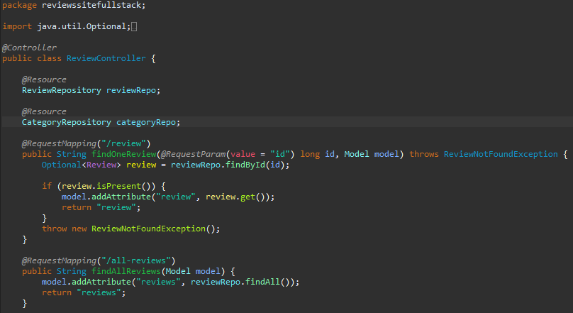
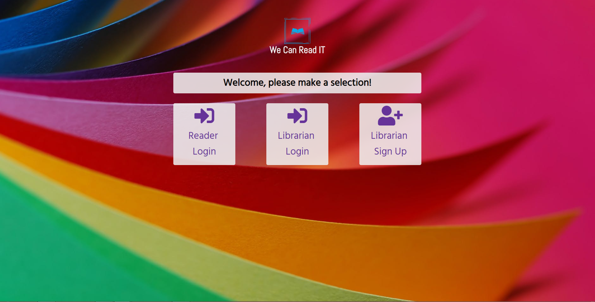
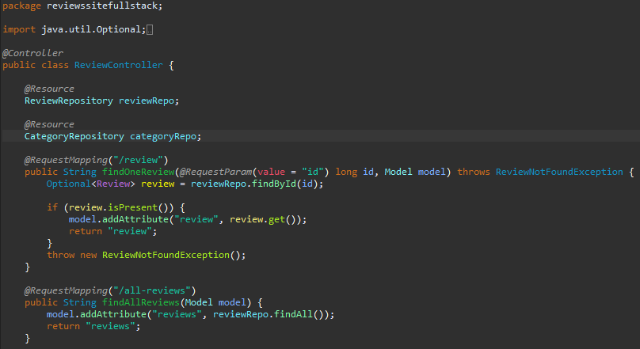
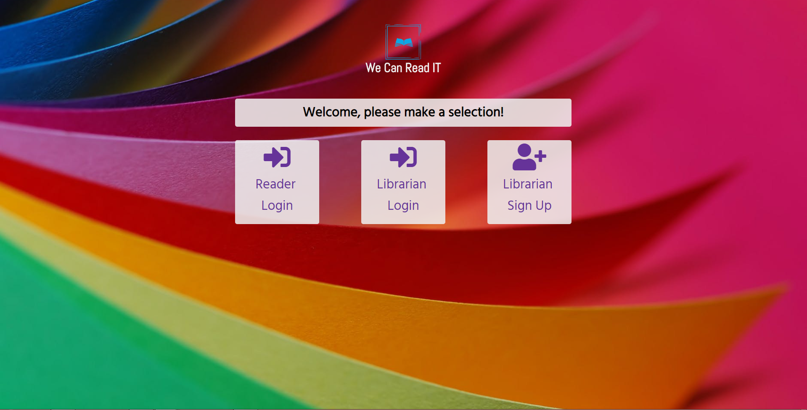

Virtual Pet is an game where you create then take care of a virtual pet. Similar to Tamagotchi your task is to balance the different values of your pet in order to keep it alive. All values with decrease over time and be replenished by actions which require energy. Coded entirely in Java.
Virtual Pets Shelter is an app where you take care of an entire shelter of pets. It takes the pets in the Virtual Pet project and creates multiple instances of them while giving the option to manage them all at once. Each pet's values decreases differently and the feature to add or adopt pets has been added. Coded in Java.
Virtual Pets Amok takes what Virtual Pet Shelter did but instead categorizes pets between organic and robot, as well as cats and dogs. Organic pets need to be fed and watered while robotic one need to be oil periodically. Cats have a shared litterbox while dog each have a designated pen. Pets can be any combination of robotic/organic and cat/dog following the rules of either. Coded with Java.
Review Site (Full stack) is a site where users can add and delete reviews. Reviews are sorted by tags which can also be add and deleted. You are also about to add comments to each review. Everything is stored and called to using an internal database. Coded with Java, Spring MVC, HTML, CSS, AJAX, SQL.
WeCanCodeIt is an app made for teacher and librarians. Inspired by the Domino's book-it program, librarians are able to login to a created profile and create reading groups. They are then able to add books to each group using Google Books API and assign point values to each book. Discussion question and set goals can also be added to groups which are also assigned points. Reader users on the other end can then see and interact with these as well as send friend requests between users in the same group. Coded using Java, HTML, CSS, JavaScript, JQuery, SQL, JPA, API, JSON, Ajax.